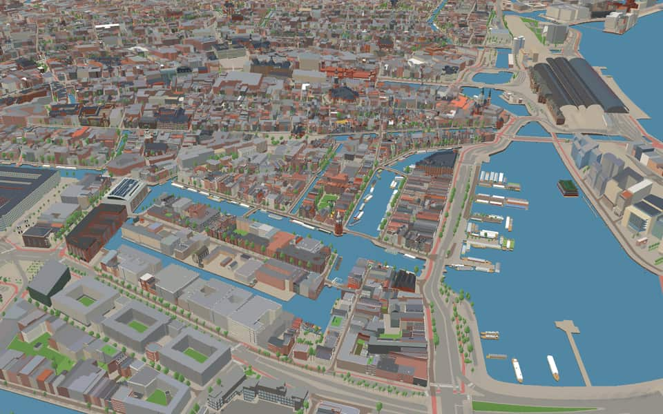
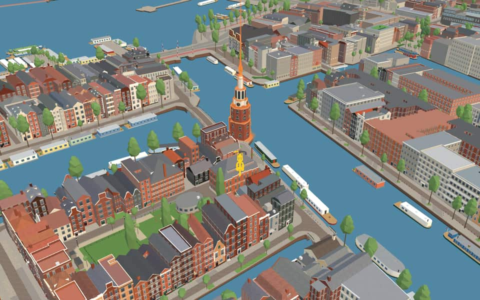
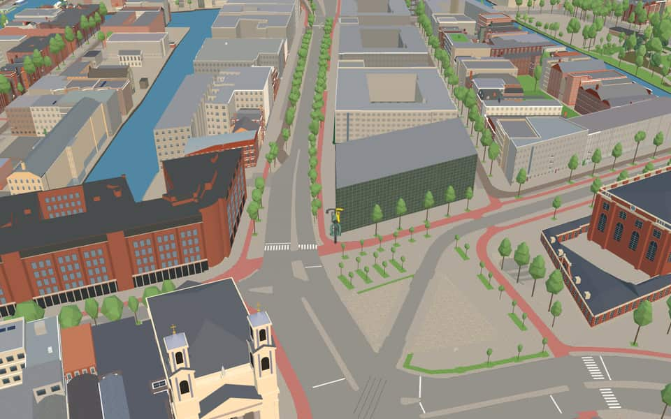
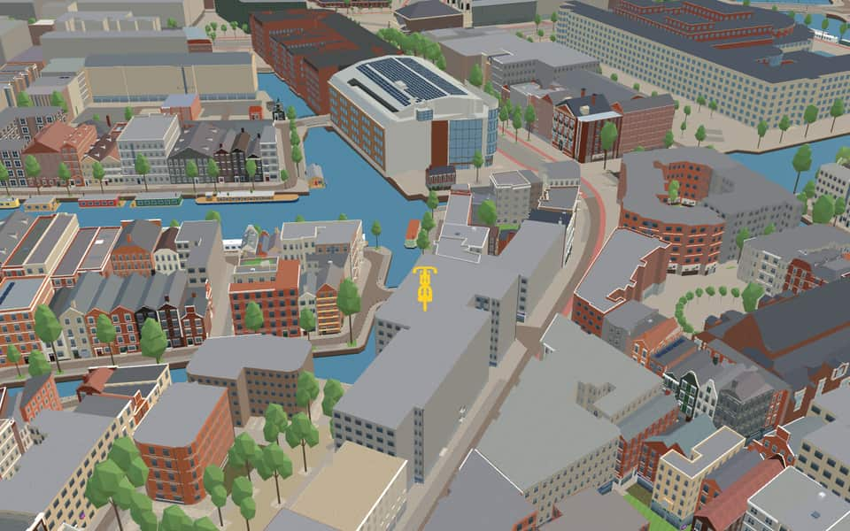

Quarter · Amsterdam
Nieuwmarkt/Lastage
The Nieuwmarkt is a square between the Geldersekade and the Kloveniersburgwal, bordered by the Zeedijk to the north and the Sint Antoniesbreestraat to the south. At its centre stands the Waag, originally a 15th-century city gate. Almost every building around it is a listed monument. nl.wikipedia.org
The name. The Nieuwmarktbuurt was long known as the Lastage, a name from 'lastaedse', ballast: in the 15th century it was where ships took on ballast. In the 16th century it grew into the city's industrial and harbour district. Wikipedia


In the game
Frames from a ride through Nieuwmarkt/Lastage.




6 more photos of Nieuwmarkt/Lastage


.jpg){kind=link}


.jpg){kind=link}


Built here
Buildings modelled one by one for the ride.
Montelbaanstoren
Netherlands Film and Television Academy, The Netherlands
Academie voor Theater en Dans
- No picture yet
De Dokwerker

Stadhuis / Nationale Opera & Ballet

Arcam — Amsterdam Centre for Architecture
Photo: 2022 Arcam-gebouw, Asd (1).jpg (Ceescamel, CC BY-SA 4.0)

Jewish Museum — four synagogues
Photo: Mikwe1.jpg (bureau Monumenten & Archeologie (bMA), Attribution)

- No picture yet
Zuiderkerk

De Waag (Sint-Antoniespoort)
Photo: Amsterdam - Waag.jpg (Patrick Verdier, Copyrighted free use)
- No picture yet
Rembrandt House

- No picture yet
Mozes en Aäronkerk


Portuguese Synagogue — Esnoga
Photo: EsnogaAmsterdam.jpg (Massimo Catarinella, CC BY-SA 3.0)
- No picture yet
Uilenburger Synagoge

- No picture yet
Church of England (Christ Church)
- No picture yet
Brandweerkazerne Nico
- No picture yet
Joods Verzetsmonument (Amstel 1)
- No picture yet
Scheepvaarthuis
- No picture yet
Sea Palace
- No picture yet
Spinoza statue (Zwanenburgwal)

.jpg){kind=link}


.jpg){kind=link}


10 more modelled buildings
- Trippenhuis Landmark model
- Montelbaanstoren Hand-built landmark
- Mozes en Aäronkerk Hand-built landmark
- NEMO Hand-built landmark
- NEMO deck Hand-built landmark
- Portuguese Synagogue Hand-built landmark
- Waag Hand-built landmark
- Zuiderkerk Hand-built landmark
- Jodenbreestraat 11 block Modelled building
- Politiebureau IJ-tunnel / Brandweerkazerne Amsterdam-Amstelland, IJ-tunnel 2, Amsterdam (1972; one pand shared by fire station and police bureau) Modelled building
Did you know
Trivia the ride can show you here.
- The square is part of Amsterdam’s Chinatown. Wikipedia
- Nieuwmarkt square was created in 1614 by covering the water around the old gate. Wikipedia
- The Sint Anthoniespoort, now the Waag, was built in 1481–1494 as part of the medieval city wall. The square was made in 1614, when the water around the gate was vaulted over. As the city expanded over the Lastage, its border moved out to the Montelbaanstoren and the Oudeschans, and the gate lost its defensive role and became a weigh house. nl.wikipedia.org
- Academie van BouwkunstTeachers were practicing architects who were also members of the Architectura et Amicitia association. en.wikipedia.org
- Academie van BouwkunstUrban design education was included in the curriculum at a time when it was a relatively new discipline. en.wikipedia.org
- Academie van BouwkunstAcademie van Bouwkunst means Academy of Architecture in Dutch. en.wikipedia.org
- Academie van BouwkunstThe school serves as the architecture division for the Amsterdam University of the Arts. en.wikipedia.org
- Academie voor Theater en DansThe institution merged with the Kleinkunstacademie in 2001. en.wikipedia.org
- Academie voor Theater en DansAnna Sablariolles was registered as the very first pupil. en.wikipedia.org
- Academie voor Theater en DansMaria Gartman served as one of the school's earliest instructors. en.wikipedia.org
- Academie voor Theater en DansThe institution kept the name de Theaterschool until September 2016. en.wikipedia.org
- Amsterdam Public Library OosterdokNew structures rose after 2003 featuring high buildings and narrow streets designed by Erick van Egeraat. nl.wikipedia.org
- Amsterdamse Hogeschool voor de KunstenNotable alumni include Dutch opera director Lotte de Beer and actress Carice van Houten. en.wikipedia.org
- Amsterdamse Hogeschool voor de KunstenSwedish photographer Linda-Maria Birbeck and Serbian theater director Bojan Đorđev also studied here. en.wikipedia.org
158 more facts
- Amsterdamse Hogeschool voor de KunstenGraphic designer Piet Zwart, who lived from 1885 to 1977, is a distinguished former student. en.wikipedia.org
- Amsterdamse Hogeschool voor de KunstenAmsterdamse Hogeschool voor de Kunsten includes the Breitner Academy, named after painter George Hendrik Breitner. en.wikipedia.org
- ArcamThe organization relies on support from donors, sponsors, and the Stimuleringsfonds voor Architectuur. en.wikipedia.org
- DecembermoordenThe dictator claimed on TV that all detainees died while attempting to flee. en.wikipedia.org
- DecembermoordenA former confidant later testified under oath that the dictator personally shot two men. en.wikipedia.org
- DecembermoordenVictims included lawyers, journalists, businessmen, soldiers, teachers and a union leader. en.wikipedia.org
- Dutch National Opera & BalletThe complex earned the nickname Stopera, a blend of 'Stadhuis' (town hall) and 'opera'. nl.wikipedia.org
- Dutch National Opera & BalletThe organization houses two distinct performing groups: De Nationale Opera and Het Nationale Ballet. nl.wikipedia.org
- GrenspaalResidents in the 1970s resisted the planned highway, causing clashes with police. nl.wikipedia.org
- Huis De PintoThe double facade was designed by Elias Bouman after David de Pinto acquired the adjacent building. en.wikipedia.org
- Huis De PintoFrom 1975 until 2012, the building served as a public library before becoming offices. en.wikipedia.org
- Huis De PintoHuis De Pinto honors a dynasty of Portuguese-Jewish merchant bankers. en.wikipedia.org
- Huis De PintoGrandson Isaac de Pinto grew up within these historic walls. en.wikipedia.org
- Jewish MuseumIn 1989, the institution received the Council of Europe Museum Prize for its presentation and building appearance. en.wikipedia.org
- Jewish WW2 resistance memorialStonemason Joseph Glatt, who specialized in Jewish gravestones, crafted the monument. nl.wikipedia.org
- Jewish WW2 resistance memorialSince 1992, this site has hosted the annual Kristallnacht commemoration. nl.wikipedia.org
- MontelbaanstorenThe name Montelbaanstoren evolved from the Duke of Alba's unrealized castle plan, Monte Albano. en.wikipedia.org
- MontelbaanstorenBuilt in 1516 as part of the city walls, the tower originally defended Amsterdam and its harbor. en.wikipedia.org
- Mozes en AäronkerkThe twin houses Mozes en Aäronkerk were named after the Old Testament brothers Moses and Aaron. en.wikipedia.org
- Mozes en AäronkerkA grander replacement building was constructed on this site between 1837 and 1841. en.wikipedia.org
- Mozes en AäronkerkBelgian architect Tilman-François Suys designed this structure alongside Haarlem's Groenmarktkerk. en.wikipedia.org
- Mozes en AäronkerkConstruction took place between 1837 and 1841 to serve as a Water Management Church. en.wikipedia.org
- NACO-houseThe unofficial name NACO-house comes from the Nederlandsche Auto Car Onderneming office that occupied it from the mid-1960s. nl.wikipedia.org
- NACO-houseSince December 13, 2021, the building has stood over the Oostertoegang canal bridge. nl.wikipedia.org
- Nederlandse Film en Televisie AcademieThe institution was established in 1958 as the Netherlands Film Academy. en.wikipedia.org
- Nederlandse Film en Televisie AcademieStudents can specialize in areas ranging from sound design to interactive multimedia effects. en.wikipedia.org
- Nederlandse Film en Televisie AcademieAlumni include director Paul Verhoeven, known for Total Recall and Basic Instinct. en.wikipedia.org
- Nederlandse Film en Televisie AcademieCinematographer Jan de Bont directed the blockbusters Twister and Speed. en.wikipedia.org
- NemoThe name Nemo comes from Latin, meaning 'Nobody'. en.wikipedia.org
- NemoRenzo Piano designed the building that now houses the museum. en.wikipedia.org
- NemoThe institution traces its origins back to the year 1923. en.wikipedia.org
- Portugese SynagogeMany Jewish-origin New Christians secretly practiced Judaism as marranos while publicly professing Catholicism. en.wikipedia.org
- Portugese SynagogeLeo Palache and volunteers convinced Nazis to spare the site from becoming a deportation center. en.wikipedia.org
- Portugese SynagogeThe sanctuary ceiling and attic floor hid Jewish ritual items for deported Jews during the war. en.wikipedia.org
- Portugese SynagogeExecutive director Salomon Coutinho kept a diary detailing the synagogue's protective efforts. en.wikipedia.org
- Rembrandt HouseA 1656 bankruptcy inventory allowed modern visitors to visualize his actual studio practice and daily life. en.wikipedia.org
- Rembrandt HouseAround 1627, the building received an extra floor and a new facade with a triangular pediment. en.wikipedia.org
- The Shipping HouseThe concrete frame was engineered by the van Gendt brothers, while architect Johan van der Mey handled the overall design. en.wikipedia.org
- The Shipping HouseExterior carvings depict the Dutch colonial empire and feature exotic women personifying the oceans at the main entrance. en.wikipedia.org
- The Shipping HouseBricks for both construction phases were baked simultaneously to ensure there was no color variation. en.wikipedia.org
- Uilenburger SynagogeAshkenazi Jews commissioned this Louis XV-style structure in 1766. nl.wikipedia.org
- Uilenburger SynagogeFor centuries, the synagogue was only accessible via corridors and stairs to rear buildings. nl.wikipedia.org
- West Indian WarehouseBetween 1647 and 1674, the West Indian Warehouse served as the headquarters of the WIC. nl.wikipedia.org
- West Indian WarehouseCommanders based here managed trade in gold, sugar, and slaves alongside other goods. nl.wikipedia.org
- West Indian WarehouseThe facade letters GWC stand for the official name Geoctroyeerde West-Indische Compagnie. nl.wikipedia.org
- ZuiderkerkArchitect Hendrick de Keyser, who designed the church, is buried inside it. en.wikipedia.org
- ZuiderkerkDuring the 1944 hunger winter, the church served as a temporary morgue. en.wikipedia.org
- ZuiderkerkThree of Rembrandt's children were buried in this church near his home. en.wikipedia.org
- ZuiderkerkClaude Monet painted the Zuiderkerk as a subject. en.wikipedia.org
- Zuiderkerk TowerThe tower was designed by Hendrick Cornelisz de Keyser, son of a Utrecht furniture maker. nl.wikipedia.org
- Zuiderkerk TowerVisitors can view a small exhibition of bell keyboards and hourglasses inside the tower. nl.wikipedia.org
- Zuiderkerk TowerThe tower offers views over the former Amsterdam Jewish Quarter and Nieuwmarkt Quarter. nl.wikipedia.org
- New MarketA medieval city gate now stands here, having been converted into a weighing house after the walls were demolished. en.wikipedia.org
- New MarketIn World War II, Nazis used this location as a collection point for Jews rounded up for concentration camps. en.wikipedia.org
- New MarketHeavy riots erupted in 1975 when residents fought against plans to tear down buildings for a highway through the area. en.wikipedia.org
- ZuiderkerkhofThe name Zuiderkerkhof combines its past as a cemetery with its later role as a courtyard at the church's foot. nl.wikipedia.org
- ZuiderkerkhofHouse numbers run from 1 to 72, yet more than half the intermediate numbers are missing. nl.wikipedia.org
- BlauwbrugThe Blauwbrug (Blue bridge) keeps a name from a vanished wooden structure painted the Dutch flag's blue around 1600. en.wikipedia.org
- BlauwbrugStone bases mimic ship bows and support columns topped with the Imperial Crown of Austria. en.wikipedia.org
- HalvemaansbrugUnlike other Amsterdam bridges, its name is chiseled into closing stones rather than written on railings. nl.wikipedia.org
- HortusbrugThe original welf bridge was relocated in 1876 to accommodate a new waterway route between the Amstel and the IJ. nl.wikipedia.org
- HortusbrugA narrow non-symmetric swing bridge was built with its pivot point not located in the middle of the span. nl.wikipedia.org
- HortusbrugOrnamental lanterns were removed in 1904 to make room for portals required by electric tram wiring. nl.wikipedia.org
- HortusbrugThe replacement concrete bascule bridge was designed by Dirk Sterenberg of the Department of Public Works. nl.wikipedia.org
- KeizersbrugA new double bascule bridge replaced the old wooden drawbridge in 1864. nl.wikipedia.org
- KeizersbrugBastiaan de Greef and Willem Springer likely designed the structure based on pillar caps. nl.wikipedia.org
- M.S. Vaz DiasbrugA bicycle tunnel runs beneath the approach slope to let slow traffic pass under Weesperstraat. nl.wikipedia.org
- M.S. Vaz DiasbrugConstant renovations and adjustments were made as the city expanded and traffic grew. nl.wikipedia.org
- OdebrugConstruction began in September 2009 to replace the Oosterdoksdam before it was dredged. nl.wikipedia.org
- OdebrugA single pier supported a massive span nearly two meters thick to allow boat turning. nl.wikipedia.org
- OdebrugTwo floating pontoons weighing up to 130 tons were used for the southern section. nl.wikipedia.org
- OdebrugOdebrug combines Oosterdokseiland with the poetic form ode. nl.wikipedia.org
- Oosterdokse SpoorbrugThe line is informally called Oosterspoorweg, meaning Eastern railway. en.wikipedia.org
- StaalmeestersbrugHeavy love locks damage the structure, so authorities regularly strip them off. nl.wikipedia.org
- WaalseilandbrugAn iron lift bridge replaced a costly wooden one in 1862. nl.wikipedia.org
- WaalseilandbrugGerrit de Broen once called it the Nieuwe Bantemmer Brug over the Waals Graft. nl.wikipedia.org
- AmstelAmstel combines 'aam' (water) and 'stelle' (solid ground), meaning water on dry land. en.wikipedia.org
- AmstelThe Van Amstel family ruled the region between the twelfth and fourteenth centuries. en.wikipedia.org
- AmstelEach year the water hosts a Liberation Day concert and a rowing match. en.wikipedia.org
- BijleveldschesluisThe name Bijleveldschesluis honors the Bijleveld Water Board, which once held land east of the city. nl.wikipedia.org
- BijleveldschesluisAmsterdam took over management of this lock in July 1492 after it had been run by the Bijleveld board. nl.wikipedia.org
- GeldersekadeA stone fish hall replaced wooden sheds on the water in 1862 before being demolished in 1938. en.wikipedia.org
- GroenburgwalA section served as a temporary Red Light District for an Amsterdamned film scene in 1987. en.wikipedia.org
- GroenburgwalCloth weavers once processed wool here, washing and spinning it before weaving fabric. en.wikipedia.org
- GroenburgwalFinished cloth was stretched on wooden frames to dry and stretch after fulling and dyeing. en.wikipedia.org
- IJThe largest part of the IJ was reclaimed between 1865 and 1876 to create new polders. en.wikipedia.org
- IJThe Buiten-IJ hosted mixed dinghy sailing events during the 1928 Summer Olympics in Amsterdam. en.wikipedia.org
- IJOranjesluizen locks divide the waterway into an inner section and an outer extension. en.wikipedia.org
- IJThe western part connects directly to the North Sea Canal while the eastern side extends the IJmeer. en.wikipedia.org
- KloveniersburgwalThe name Kloveniersburgwal comes from the 'kloveniers', a civic guard division armed with a specific gun. en.wikipedia.org
- KloveniersburgwalStarting in February 1941, this canal formed the border of the Jewish quarter segregated by German occupiers. en.wikipedia.org
- KloveniersburgwalThe Trippenhuis was constructed in 1662 at number 29. en.wikipedia.org
- KloveniersburgwalHuis Joan Poppen, also known as Gulden Steur, dates to 1642. en.wikipedia.org
- Krom BoomsslootThe canal honors Cornelis Boom, a 16th-century shipbuilder who commissioned its creation. en.wikipedia.org
- Krom BoomsslootResidents successfully stopped a 1994 plan to remove the trees lining this waterway. en.wikipedia.org
- Krom BoomsslootArchitect Emanuel Marcus Rood designed the former coffee roasting factory in the early 20th century. en.wikipedia.org
- Krom BoomsslootThe sober art nouveau structure is now recognized as a municipal monument. en.wikipedia.org
- MarinehavenStrict guards protect the site due to stored ammunition and potential attack threats. nl.wikipedia.org
- MarinehavenFacilities often include administrative buildings, helicopter platforms, or an associated airport. nl.wikipedia.org
- Nieuwe HerengrachtOriginal stone arch bridges were swapped for movable ones to accommodate the growing shipping industry. en.wikipedia.org
- Nieuwe HerengrachtA cycle tunnel on the south bank dives beneath Weesperstraat to connect the Amstel with the Plantage area. en.wikipedia.org
- OosterdokPrince Willem laid the first stone for the lock on June 11, 1830. en.wikipedia.org
- OosterdokThe double lock featured a small chamber finished before the large ocean-going one opened in 1832. en.wikipedia.org
- OosterdokThe western dyke end called Oosterdam was removed in the late 2010s to improve views. en.wikipedia.org
- OosterdokConstruction of this deep port occurred between 1831 and 1832. en.wikipedia.org
- OostertoegangThe canal dates to the Station Island construction between 1870 and 1880. nl.wikipedia.org
- OostertoegangA wide traffic bridge replaced a historic drawbridge that could no longer handle traffic. nl.wikipedia.org
- OostertoegangTram line 26 originally used a separate bridge before integrating into the main traffic structure in the 21st century. nl.wikipedia.org
- Open HavenfrontA building called Nieuwe Stadsherberg once stood on stilts directly in this water from 1660 to 1870. nl.wikipedia.org
- Open HavenfrontThe project cost an estimated 90 million euros to complete. nl.wikipedia.org
- OudeschansThe Oudeschans was originally named Nieuwe Gracht when an arm of the Amstel was dug out between 1515 and 1518. en.wikipedia.org
- OudeschansIn 1602 a lock was built to allow ships to sail from the Oudeschans to the Amstel via the Zwanenburgwal. en.wikipedia.org
- OudeschansA rumor of ghosts in 1833 earned the Oudeschans the nickname the ghost quay. en.wikipedia.org
- OudeschansNaturalist Jan Swammerdam lived at number 18, where his father ran a pharmacy with a natural history collection. en.wikipedia.org
- RaamgrachtJournalist Igor Cornelissen wrote a book titled Raamgracht 4 about his editorship there in the 1960s. en.wikipedia.org
- RaamgrachtPoet Hugo Claus and actress Sylvia Kristel lived together at Raamgracht 5-7 in the early 1970s. en.wikipedia.org
- RaamgrachtSal Meijer painted Raamgracht, and the government bought this artwork in 1957 for its 80th birthday. en.wikipedia.org
- RaamgrachtRaamgracht recalls weaving mills where wool was stretched on wooden frames (raamen) to dry. en.wikipedia.org
- RapenburgwalBridge 281, known as Peperbrug, crosses the canal's center section. en.wikipedia.org
- RapenburgwalA 1737 map shows the waterway once extended further east to Markengracht. en.wikipedia.org
- RapenburgwalThe eastern extension of this canal was back-filled in 1968 during tunnel construction. en.wikipedia.org
- Recht BoomsslootThe Fa Yin Chinese Association has taught language and hosted activities for seniors at number 5 since 1978. en.wikipedia.org
- Recht BoomsslootDe Rode Leeuw dates back to 1726 among several national monuments lining this stretch. en.wikipedia.org
- Sint AntoniesluisThe name Sint Antoniesluis also appears as Sint Anthoniesluis in historical records. nl.wikipedia.org
- SnoekjesgrachtThe name Snoekjesgracht honors Jan Pieters Snoeck, who displayed a pike on his 1595 house facade. en.wikipedia.org
- SnoekjesgrachtPlans to dig out the buried Rotterdammersloot were abandoned in 2003 due to existing buildings and lack of space. en.wikipedia.org
- SnoekjesgrachtBridge number 289 crosses the water where Snoekjessteeg meets the canal. en.wikipedia.org
- ZwanenburgwalRembrandt could move his giant Night Watch canvas out of his studio via a hidden exit running under the corner house onto this street. en.wikipedia.org
- ZwanenburgwalIn 1602 a breach in the Sint Antoniesdike allowed construction of the Sint Antoniessluis gate that defined the canal's inner section. en.wikipedia.org
- De RuijterkadeSteam boats departed from this quay for northern and western destinations starting in 1880. nl.wikipedia.org
- De RuijterkadeA large construction pit for the IJzijde bus station occupied much of the area from 2004 onwards. nl.wikipedia.org
- De RuijterkadeAlthough named after the admiral with a y, the local spelling uses an i instead. nl.wikipedia.org
- JodenbreestraatRembrandt lived in a house on this street from 1639 to 1656, which still stands today. en.wikipedia.org
- JodenbreestraatA massive structure called the Maupoleum was voted Amsterdam's ugliest building before being demolished in 1994. en.wikipedia.org
- JodenbreestraatJodenbreestraat means "Jewish Broad Street" in English. en.wikipedia.org
- JodenbreestraatPhilosopher Baruch Spinoza was born where the Mozes en Aäronkerk church now stands. en.wikipedia.org
- Jonas Daniël MeijerpleinIn 1942, German occupiers renamed it Houtmarkt to erase Jewish names before restoring it in 1945. nl.wikipedia.org
- Michiel de RuijtertunnelThe Michiel de Ruijtertunnel honors the famous Dutch admiral Michiel de Ruyter, who lived from 1607 to 1676. nl.wikipedia.org
- Michiel de RuijtertunnelConstruction began in 2003 and the tunnel finally opened to traffic on July 13, 2015. nl.wikipedia.org
- Nieuwe DoelenstraatThe name Nieuwe Doelenstraat distinguishes it from the older Old Doelenstraat built in the fifteenth century. nl.wikipedia.org
- Nieuwe DoelenstraatRembrandt van Rijn once lived on this street alongside other notable residents like Frederik Muller. nl.wikipedia.org
- Nieuwe DoelenstraatThe University Theater and Institute for Theatre Studies are part of the University of Amsterdam located here. nl.wikipedia.org
- Prins HendrikkadeMost original buildings vanished during the Kattenburg redevelopment between 1963 and 1976. nl.wikipedia.org
- Prins HendrikkadeThe northern facade looks old but was actually constructed in 1970 as a historical reconstruction. nl.wikipedia.org
- Prins HendrikkadeHouse numbers skip wildly, restarting at 27 and again at 38 after major omissions. nl.wikipedia.org
- Prins HendrikkadeThe 17th-century Zeemagazijn building has housed the National Maritime Museum since 1973. nl.wikipedia.org
- ScharrebiersluisElectricity from a tram line allowed the bridge to operate automatically starting in 1913. nl.wikipedia.org
- ScharrebiersluisA major renovation in 1986 finally fixed a long-standing defect while preserving original features. nl.wikipedia.org
- ScharrebiersluisOriginal iron fencing was kept during renovations while new red-white barricades were hidden away. nl.wikipedia.org
- Sint AntoniesbreestraatOriginally a medieval dike called Sint Antoniesdijk, it protected the city from flooding before becoming a street. en.wikipedia.org
- Sint AntoniesbreestraatRembrandt lived here from 1631 to 1635 at the home of art dealer Hendrick van Uylenburgh. en.wikipedia.org
- Sint AntoniesbreestraatSint Antoniesbreestraat translates to "St. Anthony's Broad Street". en.wikipedia.org
- ValkenburgerstraatA map from 1599 already showed this island, though it had almost no settlement at that time. nl.wikipedia.org
- ValkenburgerstraatAfter the war ended, Interior Forces troops stationed here to maintain order until Allies arrived. nl.wikipedia.org
- WeesperstraatDepartment store Vroom & Dreesman opened its first shop at number 70 in 1887. nl.wikipedia.org
- WeesperstraatDuring the harsh winter of 1944-1945, wood and materials were stripped from empty Jewish homes. nl.wikipedia.org
- WeesperstraatOriginal buildings were demolished in the 1960s to widen the street into a highway. nl.wikipedia.org
- WeesperstraatBridge 240 honors L.H., the last pre-war chief rabbi who died in Poland in 1942. nl.wikipedia.org
Names on the map
Where the canal, bridge and street names come from.
Canals and water
- AmstelThe river to which Amsterdam owes its name and its origin.
- BijleveldschesluisThis name appears in old archives; its exact meaning is unknown.
- GeldersekadeAt the city's second expansion on the east side, today's Geldersekade was the city moat. So the inner bank (on the Zeedijk side) is the oldest, built around 1500. The other side lay outside the city until 1585. In the seventeenth century the old side was called partly Keulse kaai (Cologne quay) and further on Gelderse kaai, and for a short time also Londense kaai or Engelse kaai. The names came from the landing stages here where ships moored that sailed to the towns of Gelderland, to Cologne, London and other English ports. Some remains of the city wall built here around 1500 between the Waag and the Schreierstoren can still be found in the quay wall and by the Bantammerbrug.
- GroenburgwalThe land between the Kloveniersburgwal and the Zwanenburgwal, where the cloth-drying frames stood and which was added to the city in 1593, was then the site of the dye works. This canal was therefore originally called Verwersgracht (dyers' canal). Early in the seventeenth century the name Groenburgwal arose, because there were green dye works here in particular.
- KloveniersburgwalThe Kloveniersburgwal owes its name to a part of the civic guard called kloveniers, after the firearm its men used, a culverin.
- Krom BoomsslootNamed after the sixteenth-century master shipbuilder Cornelis Pietersz. Boom. To connect his yard on the Lastage with the surrounding water he had a canal and a side canal dug.
- Nieuwe HerengrachtAfter the Heren Regeerders (the lords who governed the city; in the old days the city was not administered but ruled). The canal already existed as a ditch when in 1612 it was widened into today's canal, the first of the three main canals. The stretch beyond the Leidsegracht belongs to the expansion of 1658, as does the Nieuwe Herengracht.
- OosterdokThe Oosterdok was created by a closing dike on the east side of the city, completed in 1832. The quay on and along this dike was named Oosterdokskade and Oostelijke Handelskade.
- OosterdoksdoorgangThe water passage by the Oosterdokskade, which gives it its name.
- OostertoegangThe eastern entrance from the Oosterdok to the IJ.
- Open HavenfrontA former open waterfront, filled in to build Centraal Station.
- OudeschansA schans is an earthen rampart, and the Oudeschans was built as such around 1516 for defence against the Guelders. The rampart itself has long gone, but the water and quay have kept the name. The addition 'Oude' (old) was probably given when a new rampart was built around the enlarged city in the following century.
9 more canals with a story
- RaamgrachtThe cloth frames (lakenramen), on which dyed cloth was hung to dry, had to stand outside the city. When the Kloveniersburgwal was still the city moat, these frames stood level with today's Raamgracht. The nearby Verversstraat (dyers' street) also recalls this old Amsterdam industry.
- RapenburgwalOriginally the name of the island bounded by the IJ (now the Oosterdok), the Oudeschans, the Rapenburgwal and the Schippersgrachtje. The main street took the island's name. The origin of the name is unknown (no explanation has been found for the Leiden Rapenburg either).
- Recht BoomsslootThe sixteenth-century master shipbuilder Cornelis Pietersz Boom. To connect his yard on the Lastage with the surrounding water he had a canal and a side canal dug, which were then named after him.
- Sint AntoniesluisNamed after the Sint Antoniesdijk, the sea dike outside the city until the seventeenth century, which in turn took its name from the St Anthony's hospital or leper house. Before 1976 the Sint Antoniesluis was part of the Zwanenburgwal.
- SixhavenJonkheer Willem Six (1859-1919), chairman of the Royal Sailing and Rowing Club from 1898 to 1919 and a great promoter of digging the marina in Amsterdam-Noord. He died two months before the harbour was completed, after which it was named after him.
- SnoekjesgrachtAfter a sixteenth-century resident, Jan Pieters Snoeck, who had a pike (snoek) depicted on the façade of his house. The name was originally Snoeksgracht/steeg.
- UilenburgergrachtThe island of Uilenburg, which came within the city in 1593 together with the islands of Rapenburg and Marken. The origin of the name Uilenburg is not known for certain, but it probably comes from the marshland here, called the Uylenbraeck in 1470. The Nieuwe Uilenburgerstraat was formed by joining the Uilenburgerstraat and the Batavierstraat.
- ZouthavenIn the past this was the city's salt harbour (Zouthaven).
- ZwanenburgwalShortly after the land (on which the street and quay were laid out) was brought into the city just before 1600, there is mention of a house 'with the sign of Swanenburg' on the corner of the Zwanenburgwal, which will probably have given the name. Swanenburg was already a fairly common name at the time: Gerrit Barentsz Swanenburgh, for example, built the Muiderpoort, Weesperpoort and Utrechtsepoort in the seventeenth century. By council decision of 21 January 1976 part of the Zwanenburgwal was renamed Sint Antoniesluis. To build the Stopera, the Zwanenburgerstraat and its buildings were cleared.
3 other canals without a recorded story
IJ · Marinehaven · Waalseilandgracht
Bridges
- AluminiumbrugThis drawbridge is called Aluminiumbrug because in 1956 its leaf (the bridge deck) was made of aluminium, the first in the Netherlands. Another name for it was Dwingerbrug, after the neighbouring bastion 'Swijght Utrecht'.Bridge 222: a movable steel bridge.
- ArmeensebrugNamed after the nearby former Armenian church.Bridge 293: a steel bridge for road traffic, dated 1893 in the city's bridge register.
- BlauwbrugThe name of this fixed bridge recalls an earlier version of it, which after the Alteration of Amsterdam in 1578 was painted in the blue of Nassau. The present bridge dates from 1884. Its architects, B. de Greef and W. Springer, took their inspiration from a bridge over the Seine. Another name for this bridge was Sophiabrug, but through all the changes the name Blauwbrug was kept. That other name for the Blauwbrug never caught on, just as Sophiaplein never did for the Muntplein. Sophia of Württemberg (1817-1877) was the first wife of King Willem III, who opened this renewed bridge in 1839.Bridge 236: a steel bridge for road traffic, dated 1884 in the city's bridge register.
- Geurt BrinkgrevebrugMonument conservationist, sculptor and writer (1917-2005). An advocate for preserving the historic city centre, he eventually brought about a turning point in thinking about the old cultural heritage. He also played a major part in keeping the old street pattern of the Nieuwmarkt neighbourhood. He received the Silver Medal (Zilveren Penning) in 1982.Bridge 296: a steel bridge for road traffic, dated 1961 in the city's bridge register.
- HalvemaansbrugThis fixed bridge takes its name from the Halvemaansteeg. The origin of that name may lie in the façade of Halvemaansteeg no. 18, marked 'Van Ouds de Halve Maan' (of old the Half Moon).Bridge 221: a steel bridge for road traffic, dated 1940 in the city's bridge register.
- HortusbrugAfter the Hortus Botanicus opposite.Bridge 239: a movable steel bridge.
- Ir. B. BijvoetbrugThis bridge is named after the architect Bernard Bijvoet (1889-1979), a representative of the 'Nieuwe Bouwen' (Dutch modernism). His designs include the Zonnestraal Sanatorium and the Hotel Gooiland in Hilversum. He was closely involved in building the nearby Muziektheater on the Waterlooplein.Bridge 229: a steel bridge for cyclists, dated 1985 in the city's bridge register.
- KeizersbrugIt takes its name from the nearby Keizersstraat.Bridge 286: a brick bridge for road traffic, dated 1982 in the city's bridge register.
- KraansluisThe name of this fixed bridge recalls the Grote Kraan (great crane), which stood on the IJ from 1643 to 1841 and was used to step masts into ships and to unload blocks of stone and guns.Bridge 300: a steel bridge for road traffic, dated 1876 in the city's bridge register.
- M.S. Vaz DiasbrugThis bascule bridge is named after Mozes Salomon Vaz Dias (1882-1963), founder of the press agency M.S. Vaz Dias, which in 1934 merged into the Algemeen Nederlands Persbureau (ANP), which he co-founded.Bridge 238: a movable steel bridge.
- MontelbaansbrugBridge 280: a steel bridge for road traffic, dated 1783 in the city's bridge register.
- Mr. J.J. van der VeldebrugMr. Jonas Jacob van der Velde (1887-1980) was a member of the Amsterdam City Council for both Public Works and Housing from 1948 to 1953. He encouraged the accelerated implementation of the General Expansion Plan and under his leadership, the 50,000-home plan was established, as well as the route of the nearby IJtunnel.Bridge 1939: a movable reinforced concrete bridge.
7 more bridges with a story
- OdebrugODE is an abbreviation of Oosterdokseiland. The name also refers to a literary ode. It is intended as an ode to the Amsterdamers, who now have access to the renovated Oosterdokseiland and it is an ode to the writers whose streets are named after them in this new neighborhood. On a plaque on either side of the bridge is a short ode by Simon Carmiggelt to the city of Amsterdam with the text Amsterdam is a delightful city to leave and come to.Bridge 2358: a reinforced concrete bridge for road traffic, dated 2010 in the city's bridge register.
- ScharrebiersluisScharrebier was the traditional drink of ordinary workmen. This 'thin' beer used to be sold on this drawbridge, because many working people were often gathered there.Bridge 278: a movable steel bridge.
- SchottenburchsbrugBridge 292: a steel bridge for road traffic, dated 1889 in the city's bridge register.
- Sint AntoniesluisBridge 287: a concrete bridge for road traffic, dated 1969 in the city's bridge register.
- SnoekjesbrugAfter a sixteenth-century resident, Jan Pieters Snoeck, who had a pike (snoek) depicted on the façade of his house. The name was originally Snoeksgracht/steeg.Bridge 289: a steel bridge for road traffic, dated 1888 in the city's bridge register.
- StaalmeestersbrugThe Staalhof stood in the Staalstraat, where the Staalmeesters (sampling officials) worked, made famous by Rembrandt.Bridge 227: a movable wooden bridge.
- WaalseilandbrugNamed after the word 'waal', meaning a stretch of water enclosed by rows of piles, where ships could winter or be repaired.Bridge 283: a steel bridge for road traffic, dated 1862 in the city's bridge register.
3 other bridges without a recorded story
Moddermolenbrug · Oosterdokse Spoorbrug · Zandbrug
Streets
- 's-Gravelandse VeerThe quay used to be the mooring place of the scheduled passenger barges (beurtschepen) to this village in Het Gooi, where a number of Amsterdam regent families had their country residences. Before 1913 the quay was called Binnen-Amstel.
- 's-GravenhekjeUntil the eighteenth century this was a timber storage yard. According to a bylaw (keur) of 1663, this timber yard could only be closed off with a hek (gate). It is assumed that a timber merchant named De Graaf had his timber yard here, hence De Graafs hek and later 's-Gravenhek. The name first appears towards the end of the eighteenth century.
- A.S. OnderwijzerhofAbraham Samson Onderwijzer (1862-1934), rabbi from 1888 and chief rabbi of the Joodse Gemeente Amsterdam (Jewish Community of Amsterdam) from 1917. The courtyard was laid out on a site behind three former synagogues (since 1987 the Joods Historisch Museum).
- AluminiumbrugThis drawbridge is called Aluminiumbrug because in 1956 its leaf (the bridge deck) was made of aluminium, the first in the Netherlands. Another name for it was Dwingerbrug, after the neighbouring bastion 'Swijght Utrecht'.
- AmstelThe river to which Amsterdam owes its name and its origin.
- Anne FrankstraatAnne Frank, born to Jewish parents in 1929, was in hiding from 1942 to 1944 with her parents and other members of her family in the building at Prinsengracht 263, where she kept a diary. In 1944 the German occupiers discovered the family and deported them. Anne Frank died of illness and exhaustion in 1945 in the Bergen-Belsen concentration camp.
- Annie M.G. SchmidtstraatAnna Maria Geertruida Schmidt (1911-1995) wrote verse, songs, children's books, plays, musicals, cabaret texts, and radio and television programmes. For a long time she worked as a journalist for 'Het Parool'. Her children's books, including 'Pluk van de Petteflet' and the 'Jip en Janneke' series, are hugely popular.
- ArmeensebrugNamed after the nearby former Armenian church.
- BantammerbrugThe name of this fixed bridge recalls the sixteenth century, when the Dutch brought goods from Bantam (Dutch East Indies) to Amsterdam.
- Binnen BantammerstraatThe name recalls the sixteenth century, when the Dutch brought goods from Bantam (Dutch East Indies) to Amsterdam. In 1597 Houtman's ships were unloaded in the Waal. The Binnen Bantammerstraat was originally called Bantammerstraat. As early as around 1600 the bridge over the Geldersekade was called the Bantamsbrug. The houses on the street were then described as lying outside the Bantamspoort. In 1644 the Nieuwe Waalseiland was created. The Bantammerstraat was then given the prefix Binnen (inner), and its extension across the Oude Waal became the Buiten Bantammerstraat.
- BinnenkantThe Waalseiland, which was created in 1644 by filling in land (see under Waal), was given the name Binnenkant (inner side) on the city side and Buitenkant (outer side) on the IJ side. The latter name was changed to Prins Hendrikkade in 1879.
- BlauwbrugThe name of this fixed bridge recalls an earlier version of it, which after the Alteration of Amsterdam in 1578 was painted in the blue of Nassau. The present bridge dates from 1884. Its architects, B. de Greef and W. Springer, took their inspiration from a bridge over the Seine. Another name for this bridge was Sophiabrug, but through all the changes the name Blauwbrug was kept. That other name for the Blauwbrug never caught on, just as Sophiaplein never did for the Muntplein. Sophia of Württemberg (1817-1877) was the first wife of King Willem III, who opened this renewed bridge in 1839.
96 more streets with a story
- BrandewijnsteegThe alley ran behind the brewery 'Den Witten Haen', which used to stand on the Geldersekade. That is probably where the name (brandy alley) comes from.
- Buiten BantammerstraatThe name recalls the sixteenth century, when the Dutch brought goods from Bantam (Dutch East Indies) to Amsterdam. In 1597 Houtman's ships were unloaded in the Waal. The Binnen Bantammerstraat was originally called Bantammerstraat. As early as around 1600 the bridge over the Geldersekade was called the Bantamsbrug. The houses on the street were then described as lying outside the Bantamspoort. In 1644 the Nieuwe Waalseiland was created. The Bantammerstraat was then given the prefix Binnen (inner), and its extension across the Oude Waal became the Buiten Bantammerstraat.
- De RuijterkadeMichiel Adriaansz. de Ruyter (1607-1676), the renowned admiral of Holland and West Friesland. He was born in Vlissingen. In Amsterdam he lived on what is now the Prins Hendrikkade.
- DijkdwarsstraatThe street was laid out as a dike at the end of the sixteenth century, after which the surroundings (long a marsh) were filled in with earth (aangeplempt).
- DijkstraatThe street was laid out as a dike at the end of the sixteenth century, after which the surroundings (long a marsh) were filled in with earth (aangeplempt).
- FebruaripleinAfter the February Strike of 25 and 26 February 1941, a protest strike against the first raids in the Jewish quarter.
- FoeliedwarsstraatOne of the products, important at the time, brought from the East Indies and stored here in the East India Company's warehouses (foelie is mace).
- FoeliestraatOne of the products, important at the time, brought from the East Indies and stored here in the East India Company's warehouses (foelie is mace).
- GeldersekadeAt the city's second expansion on the east side, today's Geldersekade was the city moat. So the inner bank (on the Zeedijk side) is the oldest, built around 1500. The other side lay outside the city until 1585. In the seventeenth century the old side was called partly Keulse kaai (Cologne quay) and further on Gelderse kaai, and for a short time also Londense kaai or Engelse kaai. The names came from the landing stages here where ships moored that sailed to the towns of Gelderland, to Cologne, London and other English ports. Some remains of the city wall built here around 1500 between the Waag and the Schreierstoren can still be found in the quay wall and by the Bantammerbrug.
- Geurt BrinkgrevebrugMonument conservationist, sculptor and writer (1917-2005). An advocate for preserving the historic city centre, he eventually brought about a turning point in thinking about the old cultural heritage. He also played a major part in keeping the old street pattern of the Nieuwmarkt neighbourhood. He received the Silver Medal (Zilveren Penning) in 1982.
- GroenburgwalThe land between the Kloveniersburgwal and the Zwanenburgwal, where the cloth-drying frames stood and which was added to the city in 1593, was then the site of the dye works. This canal was therefore originally called Verwersgracht (dyers' canal). Early in the seventeenth century the name Groenburgwal arose, because there were green dye works here in particular.
- Harry BanninkstraatComposer (1929-1999), arranger and pianist. His work includes the music for Annie M.G. Schmidt's musicals, among them 'Heerlijk duurt het langst' and 'Ja zuster, Nee zuster'.
- Hella HaassepleinHélène Serafia Haasse (1918-2011), writer of novels, essays, poetry and plays. She received the P.C. Hooft Prize in 1983 and the Prize for Dutch Literature in 2004. She wrote a record 3 Boekenweekgeschenken (Book Week gift books), among them 'Oeroeg' (1948), perhaps her best-known work. She is among the Dutch authors most read abroad.
- HoutkopersburgwalNamed after the many timber merchants (houtkopers) and their yards that settled along this water in the seventeenth century. Until 1878 the cross street was called Vlooienburgsteeg.
- HoutkopersdwarsstraatNamed after the many timber merchants (houtkopers) and their yards that settled along this water in the seventeenth century. Until 1878 the cross street was called Vlooienburgsteeg.
- IJ-tunnelThe road through the tunnel under the IJ, opened on 30 October 1968.
- Ir. B. BijvoetbrugThis bridge is named after the architect Bernard Bijvoet (1889-1979), a representative of the 'Nieuwe Bouwen' (Dutch modernism). His designs include the Zonnestraal Sanatorium and the Hotel Gooiland in Hilversum. He was closely involved in building the nearby Muziektheater on the Waterlooplein.
- J.W. SiebbeleshofHe lived from 1904 to 1985 and for years worked for the interests of older residents of the Nieuwmarkt neighbourhood. The Centre for the Elderly for people from the neighbourhood is largely thanks to him.
- JodenbreestraatThis street, laid out on part of the Sint Antoniesdijk, was part of the Sint Antoniesbreestraat until the second half of the seventeenth century. At that time the Jewish population began to grow considerably, and this part of the Breestraat became the main street of the 'Jodenbuurt' (Jewish quarter). From then on the name Jodenbreestraat came into use. After the occupiers had deported the Jewish residents in the war years 1940-1945, and much of the odd-numbered side had been demolished (and burnt in stoves), the rest of that row of façades was demolished in the 1960s.
- Jonas Daniël MeijerpleinSecretary of the committee that drafted the constitution of 1813 (1780-1834). The square was made by filling in parts of the Houtgracht and the Muidergracht. The name was given to this square between the synagogues because in 1810 J.D. Meijer, as peacemaker, drew up the concordat between the two Jewish congregations.
- KadijkspleinWhen a great deal of land had built up through silting outside the old sea dike (St. Antoniesdijk), a summer dike, or quay dike (kadijk), was built. It was originally called the new sea dike, but that name later fell out of use. When this new dike was raised further, people spoke of the Laagte (low part) and the Hoogte (high part) of the Kadijk. Until 1943 the Tussen Kadijken was called Korte Kerkstraat. This is because it lies in line with the Plantage Kerklaan, although it has never been connected to it.
- KalkmarktThe lime market (kalkmarkt) was held on this quay from about 1663 until the end of the eighteenth century. The quay was made when the Nieuwe Waalseiland was filled in with earth in 1644.
- KeizersbrugIt takes its name from the nearby Keizersstraat.
- KeizersstraatOn the Lastage. The streets were laid out at the end of the sixteenth century.
- KloveniersburgwalThe Kloveniersburgwal owes its name to a part of the civic guard called kloveniers, after the firearm its men used, a culverin.
- KlovenierssteegAfter the Kloveniersdoelen, the meeting place of the old civic guard, where the Doelen Hotel now stands. The old civic guard originally used the crossbow, but in 1522 the guardsmen were given guns, or kloveren, and were named kloveniers after them. Until the end of the sixteenth century this burgwal was the outermost city moat. Before 1909 the alley was called Watersteeg, but this caused confusion with the Watersteeg by the Rokin.
- KoeriersterspleinGirls who were active in the resistance in the Second World War. They handed out ration cards, false papers and money, and escorted Jewish children by bicycle or train. The street name is also a tribute to the couriers Miep Gies and Elly Voskuijl, who looked after the people hiding in the Secret Annex, among them Anne Frank.
- KoningsstraatThe streets lie on the old Lastage and were laid out at the end of the sixteenth century.
- Korte DijkstraatThe street was laid out as a dike at the end of the sixteenth century, after which the surroundings (long a marsh) were filled in with earth (aangeplempt).
- Korte KeizersdwarsstraatOn the Lastage. The streets were laid out at the end of the sixteenth century.
- Korte KeizersstraatOn the Lastage. The streets were laid out at the end of the sixteenth century.
- Korte KoningsdwarsstraatOn the Lastage. The streets were laid out at the end of the sixteenth century.
- Korte KoningsstraatThe streets lie on the old Lastage and were laid out at the end of the sixteenth century.
- KraansluisThe name of this fixed bridge recalls the Grote Kraan (great crane), which stood on the IJ from 1643 to 1841 and was used to step masts into ships and to unload blocks of stone and guns.
- Krom BoomsslootA side canal of the Recht Boomssloot, hence the prefix krom (crooked).
- Kromme WaalThe walen were once (early seventeenth century) inlets of the IJ on the old side (Oude Waal) and the new side (Nieuwe Waal), where seagoing ships were laid up in winter. The Oude Waal silted up and became too shallow, and the Waalseiland was built up there in 1646. The quay on the city side kept the names Oude Waal and Kromme Waal (after its shape); on the Waalseiland came the names Binnenkant and Buitenkant (now Prins Hendrikkade). The Nieuwe Waal disappeared when the Westelijk Entrepotdok was built. Before 1912 the Waalsteeg was called Schippersstraatje; the name was changed because of confusion with the Schippersstraat.
- LastagewegThe Lastage was originally the land built up by the sea outside the sea dike, stretching between the Nieuwmarkt and the later Oudeschans. The name appears as early as 1342 and remained in use until the eighteenth century. At first shipyards, warehouses and ropewalks were set up here, and everything needed for ballasting, unloading and loading ships (lasten) was made here. In the second half of the sixteenth century houses and streets began to be built, and in 1593 the area officially came within the city. The Lastageweg was named in 1931 after the slum clearance of the Jonker and Ridder neighbourhood, and was made by widening the Tweede Jonkerdwarsstraat and the Tweede Ridderdwarsstraat.
- Michiel de RuijtertunnelMichiel Adriaansz. de Ruyter (1607-1676), the renowned admiral of Holland and West Friesland. He was born in Vlissingen. In Amsterdam he lived on what is now the Prins Hendrikkade.
- MontelbaanstraatNamed after the Montelbaanstoren, built in the sixteenth century. The street was laid out after the slum clearance of the Jonker and Ridder neighbourhood around 1930. Where the name Montelbaan comes from, we are in the dark.
- MuiderstraatThe street runs towards the town of Muiden (as does the Plantage Muidergracht). Most of the north side of the street was demolished in the Hunger Winter of 1944-45 and the rest in the years after, and the street was then widened to 37 metres.
- Nieuwe AmstelstraatThe river.
- Nieuwe BatavierstraatThe name is thought to come from a gable stone or shop sign in the former Batavierstraat. Batavier is most probably a corruption of Batavia. The Nieuwe Batavierstraat was created when the island of Uilenburg was rebuilt.
- Nieuwe DoelenstraatThe doelen were the places where the civic guard companies met and practised shooting at a target (doel). The Oude Doelenstraat was laid out on the site of the oldest doelen, from the fifteenth century. The Nieuwe Doelenstraat takes its name from the Kloveniersdoelen, which from 1522 stood where the Doelen Hotel is today.
- Nieuwe FoeliestraatOne of the products, important at the time, brought from the East Indies and stored here in the East India Company's warehouses (foelie is mace).
- Nieuwe HerengrachtAfter the Heren Regeerders (the lords who governed the city; in the old days the city was not administered but ruled). The canal already existed as a ditch when in 1612 it was widened into today's canal, the first of the three main canals. The stretch beyond the Leidsegracht belongs to the expansion of 1658, as does the Nieuwe Herengracht.
- Nieuwe HoogstraatThese streets lie slightly higher (hoog) than those around them. The Oude Hoogstraat was laid out around 1490, the Nieuwe Hoogstraat a century later.
- Nieuwe JonkerstraatThe Jonker, Ridder, Koning and Keizer streets (squire, knight, king and emperor) were laid out in the second half of the sixteenth century on land originally built up by silt outside the Zeedijk, and officially brought within the city in 1593 (see Lastage). Although the origin of the names is unknown, it seems obvious that the four groups of names were chosen by the city government of the time. The Jonker and Ridder neighbourhood was cleared in 1928, when the Lastageweg was also laid out. The Nieuwe Jonkerstraat is a remnant of the former Jonkerstraat.
- Nieuwe RidderstraatThe Jonker, Ridder, Koning and Keizer streets (squire, knight, king and emperor) were laid out in the second half of the sixteenth century on land originally built up by silt outside the Zeedijk, and officially brought within the city in 1593 (see Lastage). Although the origin of the names is unknown, it seems obvious that the four groups of names were chosen by the city government of the time. The Jonker and Ridder neighbourhood was cleared in 1928, when the Lastageweg was also laid out. The Nieuwe Jonkerstraat is a remnant of the former Jonkerstraat.
- Nieuwe UilenburgerstraatThe island of Uilenburg, which came within the city in 1593 together with the islands of Rapenburg and Marken. The origin of the name Uilenburg is not known for certain, but it probably comes from the marshland here, called the Uylenbraeck in 1470. The Nieuwe Uilenburgerstraat was formed by joining the Uilenburgerstraat and the Batavierstraat.
- NieuwegrachtjeIn the early nineteenth century a public street was laid out on the former timber rampart along the Rapenburgergracht, and it was named 't Nieuwe grachtje (the new little canal).
- NieuwmarktCreated in 1614 by filling in and vaulting over part of the Kloveniersburgwal. The square that thus arose around the Waag was at first called Sint Antoniesmarkt, and later Nieuwmarkt (new market).
- OnkelboerensteegAfter a seventeenth-century resident, Dirk Honckelboer; the oldest spelling is Onckelboerssteegje. Before that the alley was called Pleytstraat and Kijffstraat.
- Oost-Indische HuisbrugNamed after the nearby Oost-Indisch Huis (East India House), on the corner of the Kloveniersburgwal and the Oude Hoogstraat.
- OosterdokThe Oosterdok was created by a closing dike on the east side of the city, completed in 1832. The quay on and along this dike was named Oosterdokskade and Oostelijke Handelskade.
- OosterdoksdraaibrugThis swing bridge is by the Oosterdok, hence the name.
- OosterdokskadeThe Oosterdok was created by a closing dike on the east side of the city, completed in 1832. The quay on and along this dike was named Oosterdokskade and Oostelijke Handelskade.
- OosterdoksstraatThe Oosterdok was created by a closing dike on the east side of the city, completed in 1832. The quay on and along this dike was named Oosterdokskade and Oostelijke Handelskade.
- OostersekadeThe origin of this name is unknown. Since the description 'east side of the Oudeschans' also occurs, the explanation may be that Oosterse was used for eastern. (The Oosterkerk was also called the Oosterse kerk.) Another suggestion is that there may have been a mooring here for ships in the Baltic (Oosterse) trade (compare the Texelse kade and the Gelderse kade).
- OostertoegangThe eastern entrance from the Oosterdok to the IJ.
- Oude WaalThe walen were once (early seventeenth century) inlets of the IJ on the old side (Oude Waal) and the new side (Nieuwe Waal), where seagoing ships were laid up in winter. The Oude Waal silted up and became too shallow, and the Waalseiland was built up there in 1646. The quay on the city side kept the names Oude Waal and Kromme Waal (after its shape); on the Waalseiland came the names Binnenkant and Buitenkant (now Prins Hendrikkade). The Nieuwe Waal disappeared when the Westelijk Entrepotdok was built. Before 1912 the Waalsteeg was called Schippersstraatje; the name was changed because of confusion with the Schippersstraat.
- OudeschansA schans is an earthen rampart, and the Oudeschans was built as such around 1516 for defence against the Guelders. The rampart itself has long gone, but the water and quay have kept the name. The addition 'Oude' (old) was probably given when a new rampart was built around the enlarged city in the following century.
- PeperstraatAfter the Peperwerf (pepper yard), which lay where the Peperstraat is now and belonged to the warehouses of the Dutch East India Company, where imported spices among other things were stored.
- Piet HeinkadePieter Pieterszoon Heyn (1577-1629), vice-admiral in the service of the West India Company, known for capturing the Spanish silver fleet in 1628 in the bay of Matanzas (Cuba).
- Plantage MiddenlaanIn 1682 the city government decided to lay out a 'plantagie' on this land, which came within the city in 1658: a pleasure ground built up only with summer houses, gardens and a few inns. A grid of straight lines was laid out over the whole area. The avenue running the length of the new Plantage was named Middenweg or Middenlaan, and three cross avenues were added. The summer houses were gradually replaced by houses, so that today only the Wertheimpark recalls the area's former purpose.
- Prins HendrikkadeThe youngest son of King William II, Prince Willem Frederik Hendrik (1820-1879), who took a keen interest in trade and shipping. His bust, made in 1885 by Professor F. Stracke, stands opposite the Scheepvaarthuis. With the naming in 1879 a number of vivid names disappeared, and with them a piece of the city's memory.
- RaamgrachtThe cloth frames (lakenramen), on which dyed cloth was hung to dry, had to stand outside the city. When the Kloveniersburgwal was still the city moat, these frames stood level with today's Raamgracht. The nearby Verversstraat (dyers' street) also recalls this old Amsterdam industry.
- RapenburgOriginally the name of the island bounded by the IJ (now the Oosterdok), the Oudeschans, the Rapenburgwal and the Schippersgrachtje. The main street took the island's name. The origin of the name is unknown (no explanation has been found for the Leiden Rapenburg either).
- RapenburgerpleinOriginally the name of the island bounded by the IJ (now the Oosterdok), the Oudeschans, the Rapenburgwal and the Schippersgrachtje. The main street took the island's name. The origin of the name is unknown (no explanation has been found for the Leiden Rapenburg either).
- RapenburgerstraatOriginally the name of the island bounded by the IJ (now the Oosterdok), the Oudeschans, the Rapenburgwal and the Schippersgrachtje. The main street took the island's name. The origin of the name is unknown (no explanation has been found for the Leiden Rapenburg either).
- Recht BoomsslootThe sixteenth-century master shipbuilder Cornelis Pietersz Boom. To connect his yard on the Lastage with the surrounding water he had a canal and a side canal dug, which were then named after him.
- ScharrebiersluisScharrebier was the traditional drink of ordinary workmen. This 'thin' beer used to be sold on this drawbridge, because many working people were often gathered there.
- SchippersgrachtIn this neighbourhood, on the harbour side, skippers (schippers) and seamen made up most of the population, which gave the canal and the street their names.
- SchippersstraatIn this neighbourhood, on the harbour side, skippers (schippers) and seamen made up most of the population, which gave the canal and the street their names.
- Simon CarmiggeltstraatSimon Johannes Carmiggelt (1913-1987), writer and journalist, best known for his newspaper columns ('Kronkels'), published under the pseudonym Kronkel in 'Het Parool'. In 1974 Carmiggelt received the P.C. Hooft Prize.
- Sint AntoniesbreestraatNamed after the Sint Antoniesdijk, the sea dike outside the city until the seventeenth century, which in turn took its name from the St Anthony's hospital or leper house.
- Sint AntoniesluisNamed after the Sint Antoniesdijk, the sea dike outside the city until the seventeenth century, which in turn took its name from the St Anthony's hospital or leper house. Before 1976 the Sint Antoniesluis was part of the Zwanenburgwal.
- SnoekjesbrugAfter a sixteenth-century resident, Jan Pieters Snoeck, who had a pike (snoek) depicted on the façade of his house. The name was originally Snoeksgracht/steeg.
- SnoekjesgrachtAfter a sixteenth-century resident, Jan Pieters Snoeck, who had a pike (snoek) depicted on the façade of his house. The name was originally Snoeksgracht/steeg.
- SnoekjessteegAfter a sixteenth-century resident, Jan Pieters Snoeck, who had a pike (snoek) depicted on the façade of his house. The name was originally Snoeksgracht/steeg.
- StaalkadeAfter the Staalhof round the corner on the Groenburgwal, seat of the Staalmeesters (sampling officials), a board that supervised the products of the cloth industry in the seventeenth and eighteenth centuries. The Staalkade was only created around 1630 by land reclamation and was called Binnen-Amstel until 1913.
- StaalstraatAfter the Staalhof round the corner on the Groenburgwal, seat of the Staalmeesters (sampling officials), a board that supervised the products of the cloth industry in the seventeenth and eighteenth centuries. The Staalkade was only created around 1630 by land reclamation and was called Binnen-Amstel until 1913.
- Ton de LeeuwstraatComposer (1926-1996), at the Sweelinck Conservatory in Amsterdam from 1959 to 1987, first as senior teacher of composition and from 1984 as artistic director. He explored the relation between East and West in music and received many prizes, among them the Prix Italia and the Matthijs Vermeulen Prize.
- TurfsteegNamed after the peat warehouse of the Oudezijds Huiszittenarmen (poor relief, later the Arsenal), which the alley runs past.
- UilenburgersteegThe island of Uilenburg, which came within the city in 1593 together with the islands of Rapenburg and Marken. The origin of the name Uilenburg is not known for certain, but it probably comes from the marshland here, called the Uylenbraeck in 1470. The Nieuwe Uilenburgerstraat was formed by joining the Uilenburgerstraat and the Batavierstraat.
- UilenburgerwerfThe island of Uilenburg, which came within the city in 1593 together with the islands of Rapenburg and Marken. The origin of the name Uilenburg is not known for certain, but it probably comes from the marshland here, called the Uylenbraeck in 1470. The Nieuwe Uilenburgerstraat was formed by joining the Uilenburgerstraat and the Batavierstraat.
- ValkenburgerstraatThe island of Valkenburg or Marken, which came within the city around 1600. The origin of the name Valkenburg is unknown; perhaps there was once a house with a gable stone or a shipyard of that name. A gable stone with Valkenburg is also found elsewhere (Nieuwendijk 62/68).
- VerversstraatThis trade name (dyers) recalls the cloth industry, important in Amsterdam in the sixteenth and seventeenth centuries. After 1593 the cloth dyers were allowed to settle only between the Kloveniersburgwal and the Zwanenburgwal. At that time the Groenburgwal was called the Verversgracht.
- WaalseilandbrugNamed after the word 'waal', meaning a stretch of water enclosed by rows of piles, where ships could winter or be repaired.
- WaterloopleinNamed after the Battle of Waterloo in 1815. The square was created in 1882 by filling in the Houtgracht and the Leprozengracht.
- WeesperstraatThe street runs towards, and is therefore named after, the town of Weesp. At its end stood the Weesperpoort, and beyond it, outside the Singelgracht, the Weesperpoort station (demolished 1939). The buildings along the Weesperstraat were demolished between 1950 and 1960, after which it got its present width.
- Willem Frederik HermansstraatWriter (1921-1995) and polemicist, lecturer in physical geography at the University of Groningen. His most famous novels include 'De donkere kamer van Damokles' (The Darkroom of Damocles) and 'Nooit meer slapen' (Beyond Sleep). Chaos and chance play a large part in his work. He made his name as a polemicist with 'Mandarijnen op zwavelzuur', in which he attacked the Dutch literary world. In 1977 he received the Prijs der Nederlandse Letteren.
- ZakslootjeAn old alley name, originally a dead-end ditch (zaksloot). From 1875 it was no longer in the register of street names, but because addresses were needed it was put back in 1984.
- ZanddwarsstraatThe ground crossed by the Zandstraat and the Zanddwarsstraat was originally marshy and was raised in 1593; the name probably comes from this raising with sand. By council decision of 3 June 1982 the Zandstraat, which used to run through to the Reguliersbreestraat, was shortened to today's Zuiderkerkhof.
- ZandstraatThe ground crossed by the Zandstraat and the Zanddwarsstraat was originally marshy and was raised in 1593; the name probably comes from this raising with sand. By council decision of 3 June 1982 the Zandstraat, which used to run through to the Reguliersbreestraat, was shortened to today's Zuiderkerkhof.
- ZuiderkerkhofNamed after the square's original function as a churchyard. The little gate that led to the old churchyard has been restored and placed at the entrance to the square from the Sint Antoniesbreestraat.
- ZwanenburgwalShortly after the land (on which the street and quay were laid out) was brought into the city just before 1600, there is mention of a house 'with the sign of Swanenburg' on the corner of the Zwanenburgwal, which will probably have given the name. Swanenburg was already a fairly common name at the time: Gerrit Barentsz Swanenburgh, for example, built the Muiderpoort, Weesperpoort and Utrechtsepoort in the seventeenth century. By council decision of 21 January 1976 part of the Zwanenburgwal was renamed Sint Antoniesluis. To build the Stopera, the Zwanenburgerstraat and its buildings were cleared.
13 other streets without a recorded story
Bruno van Moerkerkenpassage · Meester Visserplein · Moddermolenbrug · Montelbaansbrug · Mr. J.J. van der Veldebrug · New Market · Odebrug · Salamandersteeg · Schottenburchsbrug · Sleperssteeg · Toegang Taxistandplaats Stadhuis · Waterplein Zuid · Zandbrug